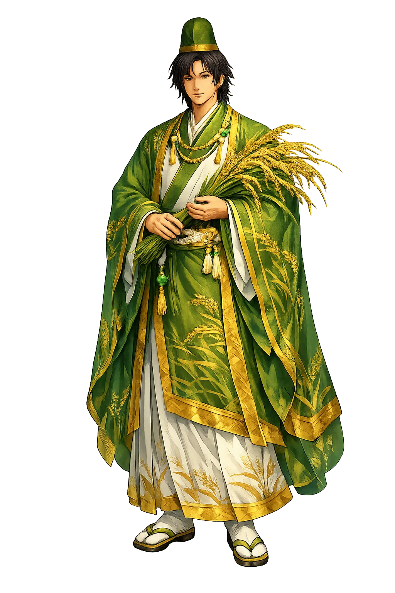
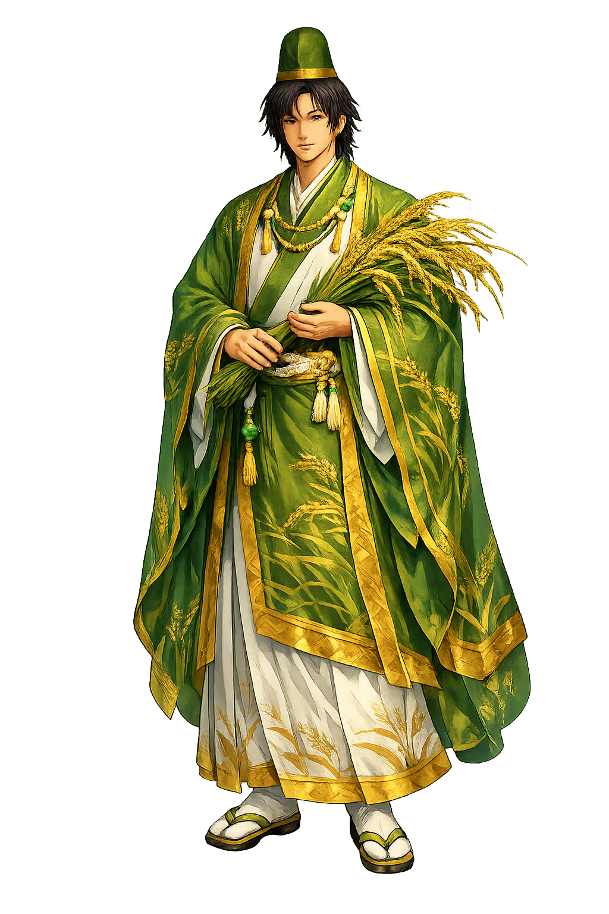

Stories of Hoori
Hoori's mythology is the bridge between the heavenly descent of Ninigi and the earthly reign of Emperor Jimmu: a story of exchanged tools, a lost hook, a voyage to the dragon palace, a broken promise, and a line of kings. It is told in the Kojiki and repeated, with variations, in the Nihon Shoki.
The youngest son of Ninigi and Konohana-Sakuya-hime received from his father the bow, while his elder brother Hoderi received the fishhook — one son of the mountains, one of the sea, mirroring the division of the land itself (Kojiki I). Hoori proposed that they exchange tools for a single day: he would try his brother's fortune with the hook, Hoderi the mountains with the bow. The day went well for no one. Hoori, inexpert at the shore, lost the borrowed hook in the sea, and when he dived and dragged the bottom it could not be found. Hoderi refused every substitute — first his own sword, then five hundred mother-of-pearl hooks, then a thousand — demanding back the one original hook, the single object through which a man's fortune was thought to run. The impossible demand drives the younger brother out of the human world and down into the sea: the quarrel over one small thing is what opens the door to the gods.
Following the counsel of an old man on the beach — one of the passing kami who advise heroes at their lowest hour — Hoori sat on the bough of a tree that bent over the waves until the tide carried him down through a gateway into the undersea palace of Watasumi-no-kami, the sea deity. There he was welcomed, bathed, feasted, and married to the sea god's daughter Toyotama-hime, the 'Abundant-Jewel Princess' (Kojiki I). When Hoori confessed why he had come, Toyotama's brother searched the sea and recovered the lost hook from the throat of a red sea-bream. Watasumi then gave his son-in-law two treasures — the tide-flowing jewel and the tide-ebbing jewel, with which any sea can be raised or stilled — and taught him the ruse by which a proud man is broken: do not answer rage with rage, but mock it gently as it rages, and its strength will spend itself against your calm. The palace gives the exiled brother everything his own shore withheld: a wife, the hook, and a strategy.
Hoori returned to land and waited on the beach. When Hoderi came raging across the strand, Hoori sang a mocking song — as the Kojiki has it, like the bushes on the shore his brother's beard was tangled, like the drifting seaweed his rage floated aimlessly — and Hoderi attacked. Hoori raised the tide-flowing jewel, and the sea rose to Hoderi's neck; Hoderi begged and wept, and Hoori raised the ebbing jewel and spared him (Kojiki I). The brothers made peace on a new order: Hoderi would keep the watery ways, and his descendants would serve Hoori's line forever. Thus the sea-fortune and the mountain-fortune were divided as they still are in Japan — and the humbler brother, who had lost everything in the water, came home owning both the land and the sea's obedience. The myth's arithmetic is deliberate: the borrowed hook cost nothing to replace, but the brotherly covenant it purchased was the real prize.
Toyotama came up from the sea to bear her child, but first she built a parturition hut roofed with cormorant feathers and laid down the law that Hoori must not look inside. Curiosity — the flaw and the engine of this whole cycle — overcame him. He peeked and saw his wife in her true shape, a great sea-dragon coiled in the hut; mortified, Toyotama abandoned the land and the newborn, sending her sister Tamayori-hime in her place with a parting song. The child, Ugayafukiaezu, was raised by his aunt, married her in time, and their son was Kamuyamato-Iwarebiko — better known as Emperor Jimmu, first emperor of Japan (Kojiki I; Nihon Shoki I). Hoori's one act of disobedience costs him his wife, yet it leaves the imperial line on land, guarded by sea and mountain at once. The sources read the episode without apology: the line of emperors begins exactly where the promise was broken.
Hunter, Sea-Voyager, and Founder of the Royal Line
Hoori is the younger son of Ninigi and Konohana-Sakuya-hime, the husband of the sea princess Toyotama, and the great-grandfather of Japan's first emperor, Jimmu. His name, 'Fire-Subduing,' marks him as the brother who overcame Hoderi's fire and whose line would rule the land.
He received the bow and became a hunter of the highlands.
Married the daughter of the sea god Ryūjin in the undersea palace.
His son by Toyotama continued the line to Emperor Jimmu.
His story explains how the imperial line gained legitimacy from both sea and land.
From the original script to the living URL
火折命
The name in its original Japanese form. Hoori (火折命) is attested in the source tradition — “Fire-subduing”. Its original diacritics and script distinctions carry the full phonetic and orthographic weight of the source tradition.
hoori
The plain hoori form is identical to the Unicode restoration. Because this name is already written in Latin letters, no diacritics, stress, or script information were lost — only capitalization differs.
Hoori
The Unicode restoration does not need to recover lost marks for Hoori. Its value is canonical spelling and consistent cataloguing, not the reconstruction of erased orthography. The domain is readable as-is to both DNS and humanity.
Hoori.com
This restoration is written entirely in ASCII letters — no Punycode encoding stands between Hoori and the DNS. The domain reads identically to machines and to human eyes.
Owned, ideal, and ASCII forms of Hoori
Hoori
Restores 火折命. The full Unicode restoration. hoori.com is not in the PuniCodex collection — it is watched for release; if it drops, this temple upgrades to an owned flagship.
How Hoori was spoken
How Hoori is preserved in writing
A bespoke provenance study for Hoori is being prepared by the PUNICODEX scholarly team.
Contribute scholarly provenance →Hoori is the one who looked. His whole career turns on small acts with enormous consequences: he borrows a hook and loses an empire's worth of trouble; he accepts a bride and gains the sea; he peeks through a feathered wall and loses her — and founds a dynasty. The Kojiki does not condemn him. Instead it makes curiosity the very mechanism by which the imperial line comes to land: no broken taboo, no Jimmu. It is a strikingly unsentimental theology of legitimacy, closer to a political founding document than a moral tale: the state begins not in obedience but in transgression survived. Hoori also teaches a subtler lesson about rivalry. He never defeats his brother by force; he wins by patience, by the tide-jewels, and by a mocking song. The victor in this myth is the one who can wait on the beach while his brother's rage exhausts itself against the sea.
Enter Extended Lore